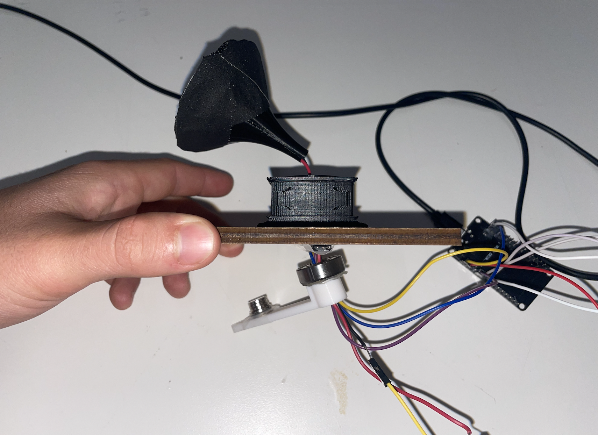

/week 9: radio, wifi, bluetooth (IoT)
# gramophone
# ---------------------------------
This week, Jim Hansen and I teamed up to take on the world. For Jim's MVP, he was working on a radio streaming device, and, for my MVP, I was working on tracking the motor crank rotations. We decided to combine our two MVPs to make a gramophone: you need to crank in order for the music to play.

With my rotation tracking abilities coupled with Jim's radio streaming abilities, all we had to do was merge our two MVPs into one Frankenstein-esque lovechild. While Jim got to work wiring everything onto a single ESP32, I got to work on the software side of things.
My initial plan was to turn the rotation script into an RPM script, and to only play music if you are cranking fast enough. However, the numbers yielded from trying to track RPMs were way too inconsistent. The new approach was to count the rotations, and, for each rotation, play one second of music. That way, you need to be cranking constantly to get a constant stream of music.
The functionality was exactly as advertised. Unfortunately, the presentation was a bit lacking. Function over form!
This was BY FAR the most comprehensive weekly project I had presented. It was the culmination of Week 6 and Week 7, because I displayed functionality of the Hall effect rotation tracker and also gamified the cranking process.
The code:
#include "Arduino.h"
#include "WiFiMulti.h"
#include "Audio.h"
#include "SPI.h"
#include "SD.h"
#include "FS.h"
// Hall sensor and rotation counter
const int hallPin = 14; // GPIO pin connected to AH1815 output
volatile int rotationCount = 0; // Variable to store the count of rotations
unsigned long lastRotationTime = 0; // Time of the last detected rotation
const unsigned long debounceDelay = 200; // Minimum delay time in milliseconds between pulses
const unsigned long playbackDuration = 1000; // Duration (in ms) to keep audio ON per rotation
// Digital I/O for audio setup
#define SD_CS 5
#define SPI_MOSI 23
#define SPI_MISO 19
#define SPI_SCK 18
#define I2S_DOUT 25
#define I2S_BCLK 27
#define I2S_LRC 26
Audio audio;
WiFiMulti wifiMulti;
String ssid = "MAKERSPACE";
String password = "12345678";
int volume = 0; // Initial volume level (muted)
void setup() {
// Setup for Hall-effect sensor
Serial.begin(115200); // Initialize serial communication
pinMode(hallPin, INPUT); // Set the hallPin as an input
attachInterrupt(digitalPinToInterrupt(hallPin), countRotation, FALLING); // Trigger on FALLING edge
// Setup for audio streaming
pinMode(SD_CS, OUTPUT);
digitalWrite(SD_CS, HIGH);
SPI.begin(SPI_SCK, SPI_MISO, SPI_MOSI);
SPI.setFrequency(1000000);
SD.begin(SD_CS);
WiFi.mode(WIFI_STA);
wifiMulti.addAP(ssid.c_str(), password.c_str());
wifiMulti.run();
if(WiFi.status() != WL_CONNECTED){
WiFi.disconnect(true);
wifiMulti.run();
}
audio.setPinout(I2S_BCLK, I2S_LRC, I2S_DOUT);
audio.setVolume(volume); // Start with volume at 0 (muted)
audio.connecttohost("http://mp3.ffh.de/radioffh/hqlivestream.mp3"); // 128k mp3
}
void loop() {
unsigned long currentTime = millis();
// Check if rotation was recent enough to keep audio ON
if (currentTime - lastRotationTime < playbackDuration) {
audio.setVolume(10); // Set volume to 10 (audio ON) during playback window
} else {
audio.setVolume(0); // Mute audio if no recent rotations
}
// Run audio stream loop
audio.loop();
delay(50); // Small delay for stability
}
// Interrupt Service Routine to count rotations
void countRotation() {
unsigned long currentTime = millis(); // Current time in milliseconds
// Check if the debounce time has passed
if ((currentTime - lastRotationTime) > debounceDelay) {
rotationCount++; // Increment rotation count
lastRotationTime = currentTime; // Update last rotation time
}
}
// Optional audio information functions
void audio_info(const char *info){
Serial.print("info "); Serial.println(info);
}
void audio_id3data(const char *info){ //id3 metadata
Serial.print("id3data "); Serial.println(info);
}
void audio_eof_mp3(const char *info){ //end of file
Serial.print("eof_mp3 "); Serial.println(info);
}
void audio_showstation(const char *info){
Serial.print("station "); Serial.println(info);
}
void audio_showstreamtitle(const char *info){
Serial.print("streamtitle "); Serial.println(info);
}
void audio_bitrate(const char *info){
Serial.print("bitrate "); Serial.println(info);
}
void audio_commercial(const char *info){ //duration in sec
Serial.print("commercial "); Serial.println(info);
}
void audio_icyurl(const char *info){ //homepage
Serial.print("icyurl "); Serial.println(info);
}
void audio_lasthost(const char *info){ //stream URL played
Serial.print("lasthost "); Serial.println(info);
}